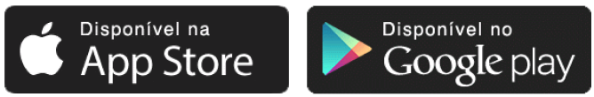

Com recursos avançados de monitoramento em tempo real e análise de dados, a SEED oferece uma
visão completa do seu negócio agrícola.
Receba previsões de safras e alertas antecipados para
melhor planejamento e tomada de decisões informadas. Identifique áreas de risco de escassez
alimentar e adote medidas preventivas.
A SEED também oferece recomendações personalizadas com
base em análises de dados agrícolas,
permitindo que você otimize suas práticas e recursos para alcançar uma produção mais eficiente e
sustentável. Além disso, nosso fórum exclusivo permite
que você interaja com outros
profissionais do setor, compartilhe conhecimentos e obtenha insights valiosos.
Não se esqueça do ChatSeed, nossa poderosa ferramenta de
inteligência artificial integrada ao
aplicativo. Tenha acesso direto a respostas e soluções personalizadas para suas dúvidas e
desafios.
Ao utilizar a plataforma SEED, agricultores e organizações podem enfrentar os desafios da
agricultura de forma mais eficiente, garantindo
segurança alimentar, reduzindo o desperdício e
promovendo a sustentabilidade.
Aproveite essa oportunidade e instale o aplicativo SEED agora mesmo para uma experiência
agrícola revolucionária!

.png)
.png)
.png)
.png)
.png)
.png)